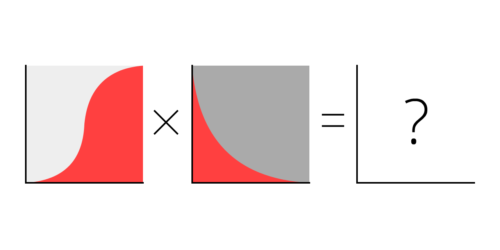
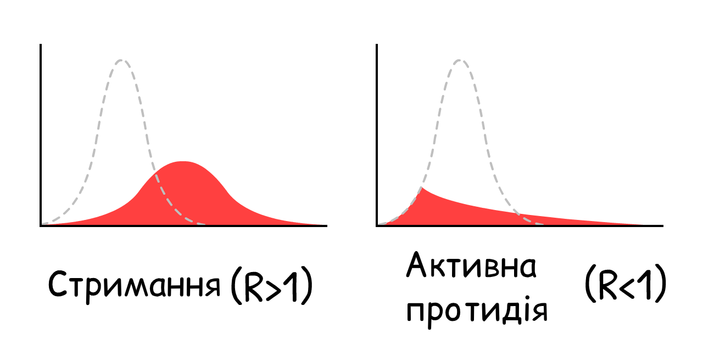

"Єдине, чого можна боятися, це страх" було тупою порадою.
Авжеж, не скуповуй туалетний папір - але якщо політики самі бояться страху, вони знецінюватимуть реальні небезпеки, щоб уникнути "масової паніки". Страх не є проблемою, проблема те, як ми "транслюємо" наш страх. Він дає нам енергію, щоб впоратися з нагальними небезпеками та підготуватися до небезпек майбутнього.
Направду, ми (Марсель, епідеміолог та Ніккі, ілюстрації/код) стурбовані. Можемо побитися об заклад, що ти теж! Тому ми спрямували наш страх у створення цих інтерактивних симуляцій, щоб ти міг спрямувати свій страх у розуміння:
- Останні декілька місяців (епідеміологія 101, SEIR модель, R & R0)
- Наступні декілька місяців (закриття країн, відстежування контактів, маски)
- Наступні декілька років (втрата імунітету? немає вакцини?)
Цей гайд (опублікований 1 травня, 2020. натисни на примітку!→[1]) має за мету дати тобі надію ТА страх. Щоб подолати COVID-19 у спосіб який також захищає наше ментальне та фінансове здоров'я, нам потрібний оптимізм, щоб будувати плани, та песимізм, щоб мати план Б. Як сказав Gladys Bronwyn Stern, “Оптиміст будує літаки, а песиміст шиє парашути.”
Тож пристебнися: ось-ось ми потрапимо в зону турбулентності.

Пілоти користуються симуляторами польотів, щоб навчитися, як не нищити літаки.
Епідеміологи користуються симуляторами епідемій, щоб навчитися, як не винищити людство.
Тож давай зробимо дуже, дуже простий "епідеміологічний симулятор польотів"! У цій симуляції,

Згідно з оцінками, напочатку спалаху COVID-19, вірус перестрибує з
Якщо ми симуляємо "подвоєння кожні 4 дні" і нічого більше, у населення, починаючи з 0.001%
Натисни"Старт", щоб зіграти в симуляцію! Ти можеш перепрограти її пізніше з іншим налаштуваннями: (технічна обмовка: [3])
Це пряма експоненційного зростання. Починає потихеньку, потім вибухає. Від "Ой та це ж просто ОРВІ" до "Добре, застуди не створюють масові кладовища у багатих містах".
Але ця симуляція не вірна. На щастя, експоненційне зростання не може продовжуватися вічно. Одна річ, яка зупиняє вірус від поширення, це коли інші "вже" мали вірус:
Чим більше
Як це змінює зростання епідемії? Давайте дізнаємося:
Це логістична крива зростання. у формі S. Починає з малого, вибухає, потім знову сповільнюється.
Але ця симуляція все ще не вірна. Ми оминаємо той факт, що
–ó–∞—Ä–∞–¥–∏ —Å–ø—Ä–æ—â–µ–Ω–Ω—è, —É—è–≤—ñ–º–æ, що всі
Згідно з оцінками щодо COVID-19, ти залишаєшся
Це протилежність експоненційного зростання, експоненційна крива згасання.
Що стається, якщо ми симуляємо S-криву логістичного зростання з одужанням?

Давайте поглянемо.
Червона крива це поточні випадки
Сіра крива це загальна кількість випадків (поточні + одужавші
І це звідки походить та сама відома крива! Це не дзвіноподібна крива і навіть не "логнормальна" крива. Вона не має назви. Але ти бачив(ла) її мільярди разів, заприсягшись вирівняти криву.
Це ВІО Модель,[5]
(
друга найважливіша ідея Епідеміології 101:
Примітка: Симуляції, якими формують політику, набагато, набагато складніші, ніж ці! Але ВІО Модель може пояснити ті ж загальні відкриття, навіть якщо бракує деталей.
Насправді, додаймо одну деталь: перед тим, як

(Цей варіант називається ВІОК Модель[6], де "К" означає
Згідно з оцінками COVID-19, ти
Червона + Рожева крива це поточні виподки (активні носії
Сіра крива це загальна кількість випадків (поточні + одужавші
Не багато змінюється! Як довго ти залишаєшся
Чому так? Тому що перша-найважливіша ідея Епідеміології 101:

Скорочено від "Репродукції" (Reproduction). Це середня кількість людей, яку інфікує
R змінюється протягом епідемії з виробленням імунітету та коли вживаються спеціальні заходи.
R0 це те, якою була R напочатку епідемії, перед виробленням імунітету та вжиттям заходів. R0 більш точно відображає потужність самого вірусу, але все одно може різнитися. Наприклад, R0 вище у густонаселених містах, ніж у сільській місцевості.
(Більшість новинних статей – навіть деякі наукові дослідження! – плутають R та R0. Так, наукова термінологія погана.)
R0 для сезонних ОРВІ приблизно 1.28[8]. Це означає, що на початку спалаху грипу, кожен
Згідно з оцінками, R0 для COVID-19 складає 2.2,[9] втім одне ще не закінчене дослідження вказує, що R було 5.7(!) у Вухані.[10]
У наших симуляціях – на початку та в середньому –
Пограй з цим R0 калькулятором, щоб побачити, як R0 залежить від часу одужання та швидкості нових заражень:
Але пам'тай: чим менше
Коли достатня кількість людей має імунітет, R < 1, епідемія під контролем! Це називається колективним імунітетом. Для грипів, колективний імунітет досягається за допомогою вакцинації. Намагатися досягти "природнього колективного імунітету", дозволячи масове інфікування, жахлива ідея. (Але не з тої причини, яка одразу спала на думку! Ми пояснимо це пізніше.)
Давай ще раз запустимо SEIR модель, але демонструючи R0, R з плином часу та з рубіжем колективного імунітету:
Примітка: Загальна кількість випадків не припиняє рости після досягнення колективного імунітету, а перескакує його! І вона перетинає рубіж у той же час, як кількість поточних випадків досягає піку. (Це відбувається незалежно від того, як ти зміниш налаштування, - спробуй сам(а)!)
Це відбувається тому, що коли є більше не-
Якщо ти можеш взяти лише один урок з цього гайду, ось він – це надзвичайно складна діаграма, тому, будь ласка, дай собі часу, щоб повністю її зрозуміти:

Це значить: нам НЕ потрібно відстежити усі інфікування або майже усі інфікування, щоб зупинити COVID-19!
Це парадокс. COVID-19 надзвичайно заразний, але щоб стримати його, нам необхідно зупинити "лише" понад 60% захворювань.60%?! Якщо б це була оцінка в університеті, то лише E (задовільнення мінімальних критеріїв.) Але якщо R0 = 2.5, зменшення його на 61% дає нам R = 0.975, тобто R < 1 і вірус приборкано! (точна формула:[12])

(Якщо ти думаєш, що R0 або інші числа у нашій симуляції завеликі чи замалі, добре, що ти ставиш під сумнів наші припущення! У кінці гайду ти знайдеш "Режим Пісочниці", де ти зможеш задати свої числа й побачити, що вийде.)
Кожний захід для запобігання COVID-19, який ти коли-небудь чув(ла) – миття рук, соціальне дистанціювання, закриття країн, самоізоляція, відстеження контактів та карантини, маски, навіть колективний імунітет - усі вони роблять одне й те ж:
Знижують R до R < 1.
Тож зараз давай скористаємося нашим "епідеміологічним симулятором польотів", щоб з'ясувати, як ми можемо досягти R < 1 у спосіб, який який також захищає наше психологічне та фінансове благополуччя?
Приготуйся до аварійної посадки...
...могли би бути ще гіршими. Ось паралельна реальність, якої ми уникли:
###Сценарій 0: Ніяк не діяти
Приблизно 1 з 20 хворих на COVID-19 потребує палату інтенсивної терапії (ПІТ).[13] У багатій країні як США, існує 1 ліжко у такій палаті на кожні 3400 людей.[14] Тож США може дозволити 20 з 3400 одночасно інфікованих людей - або ж 0.6% населення.
Навіть якщо ми збільшимо місткість ПІТ більше ніж у 3 рази до 2%, ось, що би відбулося, якщо ми не вживали ніяких заходів:
Виглядає не дуже добре.
Цього висновку дійшли the March 16 Imperial College report: не вживаючи ніяких заходів, у нас переповнюються ПІТ і 80% населення будуть інфіковані. (пам'тай, загальна кількість випадків перестрибує колективний імунітет)
Навіть якщо лише 0.5% інфікованих помирають – оптимістичне припущення, коли не залишилось ПІТ, - у великій країні як США з населенням у 300 мільйонів 0.5% від 80% з 300 мільйонів = 1.2 мільйонів померлих... ЯКЩО б ми бездіяли.
(Багато новин та соціальних мереж повідомляло, що "80% населення будуть інфікованими", забуваючи додати "ЯКЩО МИ НІЧОГО НЕ РОБИТИМЕМО". Весь страх було перенаправлено у кліки та лайки, а не обміркування ситуації. Ох.)
###Сценарій 1: Вирівняти криву / Колективний імунітет
План "Вирівняти криву" було прорекламовано кожною організацією з охорони здоров'я, в той час, як першопочатковий план "колективного імунітету" Великобританії викликав загальне несхвалення. То був однаковий план. Просто Великобританія не змогла комунікувати його правильно. [15]
Втім обидва плани мають буквально фатальні недоліки.
По-перше, давай поглянемо на два основні способи "вирівняння кривої": миття рук та фізичне дистанціювання.
Інтенсивніше миття рук зменшує розповсюдження грипу та застуди на ~25%[16] у заможних країнах, в той час, як повне закриття міста як Лондон зменшує кількість контактування між людьми на ~70%[17]. Тож давай припустимо, що миття рук може зменшити R аж на 25%, а дистанціювання на 70%:
Пограй з цим калькулятором, щоб побачити, як % не-
Тепер давай змоделюєм, що трапиться з епідемією COVID-19, якщо, починаючи з березня 2020, ми б збільшили миття рук, але ввели лише помірне фізичне дистанціювання – R знижується, але все ще більше 1:
Три примітки:
-
Це зменшує загальну кількість випадків! Навіть якщо R < 1, зменшення R все одно зберігає життя, зменшуючи стрибок над колективним імунітетом. Багато людей думають, що "вирівняння кривої" розподіляє кількість заражень у часі, але не зменшує загальну кількість випадків.Це неможливо у будь-якій моделі Епідеміології 101. Оскільки у новинах поширювався меседж, що не можливо уникнути інфікування 80%+ населення, люди зробили висновок, що неможливо повпливати на загальну кількість заражень. Ох.
-
Через зовнішнє втручання та вжиття заходів, поточна кількість випадків досягає піку перед досягненням колективного імунітету. Насправді, у цій симуляції загальна кількість випадків зовсім трохи перестрибує рубіж колективного імунітету - план Великобританії! На тому етапі R < 1, можна зупинити будь-які втручання і COVID-19 залишиться під контролем! Що ж, лише з однією проблемою...
-
Все одно закінчаться місця у палатах інтенсивної терапії. На декілька місяців (і не забувай, що ми вже збільшили місткість ПІТ у три рази для симуляцій)
Це ще одне відкриття з доповіді Imperial College від 16 березня, яке переконало Великобританію покинути першопочатковий план. Будь-яка спроба пом'якшення ефектів (зменщення R, але R > 1) зазнає невдачі. Єдиний спосіб це активна протидія (зменшення R до R < 1).

Тобто не достатньо просто "вирівняти" криву, потрібно розчавити криву. Наприклад, за допомогою...
###Сценарій 2: Закриття міст/країн протягом місяців
Давай –ø–æ–¥–∏–≤–∏–º–æ—Å—è, що стається, коли ми —Ä–æ–∑—á–∞–≤–ª—é—î–º–æ криву з 5 –º—ñ—Å—è—Ü—è–º–∏ у –∑–∞–∫—Ä–∏—Ç–æ–º—É —Ä–µ–∂–∏–º—ñ, –∑–º–µ–Ω—à–µ–Ω–Ω—è–º
Упс.
Це та сама друга хвиля, про яку всі говорять. Як тільки ми виходимо з карантину, ми знову отримуємо R > 1. Тож декілька залишених
Закриття міст не рецепт успіху, а лише можливість для перезавантаження.
Тож що, ми маємо закривати міста знову і знову?
###Сценарій 3: Періодичні закриття міст
Це рішення було вперше запропоноване у доповіді Imperial College від 16 березня і пізніше у статті з Harvard.[19]
Ось симуляція: (Після того, як програєш запрограмовний сценарій, спробуй змоделювати свій графік карантинів, змінюючи повзунки під час програвання симуляції! Пам'ятай, що ти можеш зупинити і відновити гру та змінити її швидкість.)
This would keep cases below ICU capacity! And it's much better than an 18-month lockdown until a vaccine is available. We just need to... shut down for a few months, open up for a few months, and repeat until a vaccine is available. (And if there's no vaccine, repeat until herd immunity is reached... in 2022.)
Look, it's nice to draw a line saying "ICU capacity", but there's lots of important things we can't simulate here. Like:
Mental Health: Loneliness is one of the biggest risk factors for depression, anxiety, and suicide. And it's as associated with an early death as smoking 15 cigarettes a day.[20]
Financial Health: "What about the economy" sounds like you care more about dollars than lives, but "the economy" isn't just stocks: it's people's ability to provide food & shelter for their loved ones, to invest in their kids' futures, and enjoy arts, foods, videogames – the stuff that makes life worth living. And besides, poverty itself has horrible impacts on mental and physical health.
Not saying we shouldn't lock down again! We'll look at "circuit breaker" lockdowns later. Still, it's not ideal.
But wait... haven't Taiwan and South Korea already contained COVID-19? For 4 whole months, without long-term lockdowns?
How?
###Scenario 4: Test, Trace, Isolate
"Sure, we *could've* done what Taiwan & South Korea did at the start, but it's too late now. We missed the start."
But that's exactly it! “A lockdown isn't a cure, it's just a restart”... and a fresh start is what we need.
To understand how Taiwan & South Korea contained COVID-19, we need to understand the exact timeline of a typical COVID-19 infection[21]:
If cases only self-isolate when they know they're sick (that is, they feel symptoms), the virus can still spread:

And in fact, 44% of all transmissions are like this: pre-symptomatic! [22]
But, if we find and quarantine a symptomatic case's recent close contacts... we stop the spread, by staying one step ahead!

This is called contact tracing. It's an old idea, was used at an unprecedented scale to contain Ebola[23], and now it's core part of how Taiwan & South Korea are containing COVID-19!
(It also lets us use our limited tests more efficiently, to find pre-symptomatic
Traditionally, contacts are found with in-person interviews, but those alone are too slow for COVID-19's ~48 hour window. That's why contact tracers need help, and be supported by – NOT replaced by – contact tracing apps.
(This idea didn't come from "techies": using an app to fight COVID-19 was first proposed by a team of Oxford epidemiologists.)
Wait, apps that trace who you've been in contact with?... Does that mean giving up privacy, giving in to Big Brother?
Heck no! DP-3T, a team of epidemiologists & cryptographers (including one of us, Marcel Salathé) is already making a contact tracing app – with code available to the public – that reveals no info about your identity, location, who your contacts are, or even how many contacts you've had.
Here's how it works:

Along with similar teams like TCN Protocol[24] and MIT PACT[25], they've inspired Apple & Google to bake privacy-first contact tracing directly into Android/iOS.[26] (Don't trust Google/Apple? Good! The beauty of this system is it doesn't need trust!) Soon, your local public health agency may ask you to download an app. If it's privacy-first with publicly-available code, please do!
But what about folks without smartphones? Or infections through doorknobs? Or "true" asymptomatic cases? Contact tracing apps can't catch all transmissions... and that's okay! We don't need to catch all transmissions, just 60%+ to get R < 1.
(Rant about the confusion about pre-symptomatic vs "true" asymptomatic. "True" asymptomatics are rare:[27])
Isolating symptomatic cases would reduce R by up to 40%, and quarantining their pre/a-symptomatic contacts would reduce R by up to 50%[28]:
Thus, even without 100% contact quarantining, we can get R < 1 without a lockdown! Much better for our mental & financial health. (As for the cost to folks who have to self-isolate/quarantine, governments should support them – pay for the tests, job protection, subsidized paid leave, etc. Still way cheaper than intermittent lockdown.)
We then keep R < 1 until we have a vaccine, which turns susceptible
(Note: this calculator pretends the vaccines are 100% effective. Just remember that in reality, you'd have to compensate by vaccinating more than "herd immunity", to actually get herd immunity)
Okay, enough talk. Here's a simulation of:
- A few-month lockdown, until we can...
- Switch to "Test, Trace, Isolate" until we can...
- Vaccinate enough people, which means...
- We win.
So that's it! That's how we make an emergency landing on this plane.
That's how we beat COVID-19.
...
But what if things still go wrong? Things have gone horribly wrong already. That's fear, and that's good! Fear gives us energy to create backup plans.
The pessimist invents the parachute.
###Scenario 4+: Masks For All, Summer, Circuit Breakers
What if R0 is way higher than we thought, and the above interventions, even with mild distancing, still aren't enough to get R < 1?
Remember, even if we can't get R < 1, reducing R still reduces the "overshoot" in total cases, thus saving lives. But still, R < 1 is the ideal, so here's a few other ways to reduce R:
Masks For All:
"Wait," you might ask, "I thought face masks don't stop you from getting sick?"
You're right. Masks don't stop you from getting sick[29]... they stop you from getting others sick.

To put a number on it: surgical masks on the sick person reduce cold & flu viruses in aerosols by 70%.[30] Reducing transmissions by 70% would be as large an impact as a lockdown!
However, we don't know for sure the impact of masks on COVID-19 specifically. In science, one should only publish a finding if you're 95% sure of it. (...should.[31]) Masks, as of May 1st 2020, are less than "95% sure".
However, pandemics are like poker. Make bets only when you're 95% sure, and you'll lose everything at stake. As a recent article on masks in the British Medical Journal notes,[32] we have to make cost/benefit analyses under uncertainty. Like so:
Cost: If homemade cloth masks (which are ~2/3 as effective as surgical masks[33]), super cheap. If surgical masks, more expensive but still pretty cheap.
Benefit: Even if it's a 50–50 chance of surgical masks reducing transmission by 0% or 70%, the average "expected value" is still 35%, same as a half-lockdown! So let's guess-timate that surgical masks reduce R by up to 35%, discounted for our uncertainty. (Again, you can challenge our assumptions by turning the sliders up/down)
(other arguments for/against masks:[34])
"They're hard to wear correctly." It's also hard to wash your hands according to the WHO Guidelines – seriously, "Step 3) right palm over left dorsum"?! – but we still recommend handwashing, because imperfect is still better than nothing.
"It'll make people more reckless with handwashing & social distancing." Sure, and safety belts make people ignore stop signs, and flossing makes people eat rocks. But seriously, we'd argue the opposite: masks are a constant physical reminder to be careful – and in East Asia, masks are also a symbol of solidarity!
Masks alone won't get R < 1. But if handwashing & "Test, Trace, Isolate" only gets us to R = 1.10, having just 1/3 of people wear masks would tip that over to R < 1, virus contained!
Summer:
Okay, this isn't an "intervention" we can control, but it will help! Some news outlets report that summer won't do anything to COVID-19. They're half right: summer won't get R < 1, but it will reduce R.
For COVID-19, every extra 1° Celsius (2.2° Fahrenheit) makes R drop by 1.2%.[35] The summer-winter difference in New York City is 15°C (60°F), so summer will make R drop by 18%.
Summer alone won't make R < 1, but if we have limited resources, we can scale back some interventions in the summer – so we can scale them higher in the winter.
A "Circuit Breaker" Lockdown:
And if all that still isn't enough to get R < 1... we can do another lockdown.
But we wouldn't have to be 2-months-closed / 1-month-open over & over! Because R is reduced, we'd only need one or two more "circuit breaker" lockdowns before a vaccine is available. (Singapore had to do this recently, "despite" having controlled COVID-19 for 4 months. That's not failure: this is what success takes.)
Here's a simulation a "lazy case" scenario:
- Lockdown, then
- A moderate amount of hygiene & "Test, Trace, Isolate", with a mild amount of "Masks For All", then...
- One more "circuit breaker" lockdown before a vaccine's found.
Not to mention all the other interventions we could do, to further push R down:
- Travel restrictions/quarantines
- Temperature checks at malls & schools
- Deep-cleaning public spaces
- Replacing hand-shaking with foot-bumping
- And all else human ingenuity shall bring
. . .
We hope these plans give you hope.
Even under a pessimistic scenario, it is possible to beat COVID-19, while protecting our mental and financial health. Use the lockdown as a "reset button", keep R < 1 with case isolation + privacy-protecting contract tracing + at least cloth masks for all... and life can get back to a normal-ish!
Sure, you may have dried-out hands. But you'll get to invite a date out to a comics bookstore! You'll get to go out with friends to watch the latest Hollywood cash-grab. You'll get to people-watch at a library, taking joy in people going about the simple business of being alive.
Even under the worst-case scenario... life perseveres.
So now, let's plan for some worse worst-case scenarios. Water landing, get your life jacket, and please follow the lights to the emergency exits:
You get COVID-19, and recover. Or you get the COVID-19 vaccine. Either way, you're now immune...
...for how long?
- COVID-19 is most closely related to SARS, which gave its survivors 2 years of immunity.[^SARS immunity]
- The coronaviruses that cause "the" common cold give you 8 months of immunity.[^cold immunity]
- There's reports of folks recovering from COVID-19, then testing positive again, but it's unclear if these are false positives.[36]
- One not-yet-peer-reviewed study on monkeys showed immunity to the COVID-19 coronavirus for at least 28 days.[37]
But for COVID-19 in humans, as of May 1st 2020, "how long" is the big unknown.
[^SARS immunity]: “SARS-specific antibodies were maintained for an average of 2 years [...] Thus, SARS patients might be susceptible to reinfection ≥3 years after initial exposure.” Wu LP, Wang NC, Chang YH, et al. "Sadly" we'll never know how long SARS immunity would have really lasted, since we eradicated it so quickly.
[^cold immunity]: “We found no significant difference between the probability of testing positive at least once and the probability of a recurrence for the beta-coronaviruses HKU1 and OC43 at 34 weeks after enrollment/first infection.” Marta Galanti & Jeffrey Shaman (PDF)
For these simulations, let's say it's 1 year.
Here's a simulation starting with 100%
І знову крива експоненційного згасання!
Це є модель SEIRS. Де літера "S" (від англ. Susceptible) позначає

А зараз, давайте просимулюємо спалах COVID-19, протягом 10 років, без заходів втручання... якщо імунітет діє лише один рік:
В попередній симуляції ми спостерігали лише один спалах який перенавантажив палати інтенсивної терапіх, та кількість
R = 1, це - ендемія.
На щастя, літо зменшує R, тому це зробить ситуацію краще:
Ох.
Парадоксально, літо робить спалахи гіршими та регулярними! Через те, що літо зменшує кількість нових
На щастя, вирішення є дуже простим – вакцинуйте людей кожну осінь/зиму, так само як роблять це з щепленням від грипу:
(Після прогавання запису, спробуйте симуляцію вашої власної кампанії вакцинації! Пам'ятайте що ви можете зупини та продовжити симуляцію в будь-який момент)
Але ось ще страшніше питання:
Що буде якщо вакцини не буде роками? Або взагалі?
Щоб було зрозуміло: це малоймовірно. Більшість епідеміологів очікують вакцину через 1-2 роки. Так, до цього ніколи не було вакцини для будь-якого іншого коронавірусу, але це через те, що SARS був викорінений швидко, а звичайна ГРВІ не варта того.
Тим не менш, дослідники інфекційних захворювань висловили свої переживання: Що буде якщо ми не можемо зробити дотстатньо? [38] Що буде якщо ми поспішимо, та вона не буде безпечна? [39]
Навіть у кошмарному "без-вакцини" сценарії, ми все одно маємо 3 виходи. Від найбільш до найменш страшних:
-
Робити переривчасті або послаблені R < 1 втручання, щоб досягнути "колективний імунітет". (Увана: це призведе до багатьох смертей та пошкоджених легенів. Та не спрацює якщо імунітет не є дуже довгостроковим.)
-
Робити R < 1 заходи втручання постійно. Відстеження контактів та носіння масок стає новою нормою у після-COVID-19 світі, так само як ІПСШ тести та використання презервативу стали новою нормою у після-ВІЛ світі.
-
Робити R < 1 заходи втручання поки ми не створимо процедури лікування, що зроблять набагато, набагато менш шанс, що лікування COVID-19 вимагатиме інтенсивної терапії. (Не дивлячись на те, що ми все одно маємо це робити!) Зменшення кількості палатн інтенсивної терапії в 10 разів, те саме що збільшення кількості палат в 10 разів:
Ось симуляція без довговічний імунітету, без вакцини та навіть без будь-який заходів втручання - лише повільно збільшуйте місткість щоб пережити довгострокові спалахи
Навіть у найгіршому з найгірших випадків... життя було врятовано.
. . .
Можливо ви б хотіли заперечити нашим припущенням та спробувати інший R0's або інші параметри. Або спробувати просимулювати вашу власну комбінацію заходи втручання!
Ось (необов'язковий) Режим Пісочниці, зі всіма параметрами. (Скрольте вниз щоб побачити всі параметри) Симулюйте та грайтесь скільки вашій душі завгодно:
Основний "симулятор польоту епідемії" навчив нас багато чому. Він дав нам можливість відповісти на питання про декілька минулих місяців, декілька місяців у майбутньому та наступні роки.
Тому врешті-решт, давайте повернемось до...
Літак потонув. Ми заскочили на рятувальні плоти. Настав час щоб знайти нарешті землю.[40]
Команди епідеміологів та політиків (лівих, правих, та багатопартійних) мають певний консенсус в тому як побороти COVID-19, тим часом захищаючи наші життя та своботи.
Ось приблизна ідея, з деякими (менш популярними) запасними планами:

То що це значить для ВАС, зараз?
Для всіх: Поважайте карантин, щоб ми всі могли вийти з першої фази якмога швидке. Продовжуйте мити ті руки. Робіть свої власні маски для обличчя. Завантажуйте додатки для відстеження контактів які поважають приватність, після того як вони стануть доступні через декілька місяців. Будьте здорові, фізично та психологічно! Та пишіть своїй місцевій владі підняти свою дупу і...
Для політиків: Створюйте закони для підтримки людей які мають бути в самоізоляці/карантині. Наймайте більше людей для відстеження контактованих людей, яким будуть допомогати додатки які поважають приватність відстеження контактів. Виділяйте більше коштів до речей які ми маємо будувати, як наприклад...
Для виробників/творців: Створюйте тести. Створюйте вентилятори. Створюйте персональні засоби захисту для лікарень. Створюйте тести. Створюйте вентилятори. Створюйте додатки. Створюйте противірусні, профілактичні та інші засоби, крім вакцин. Створюйте вакцини. Створюйте тести. Створюйте тести. Створюйте тести. Створюйте надію.
Не знецінюйте страх, щоб створювати надію. Наш страх має йти в крок з нашою надією, як винахідники літаків та парашутів. Готуючись до страшного майбутнього, ми формуємо обнадійливе майбутнє.
Єдина річ яке ми маємо боятись, це ідея що єдине чого нам требя боятись, це страху самого по собі. TODO
Ці примітки міститимуть джерела, посилання чи бонусні коментарі. Як оцей коментар!
Цей гайд було опубліковано 1 травня, 2020. Багато деталей застарішають, але ми впевнені, що гайд охопить 95% сценаріїв майбутнього і що Епідеміологія 101 буде корисною завжди. ↩︎
"Середній [serial] інтервал був 3.96 днів (95% CI 3.53–4.39 days)”. Du Z, Xu X, Wu Y, Wang L, Cowling BJ, Ancel Meyers L (Дисклеймер: Ранні видання статті не вважаються фінальними версіями) ↩︎
Пам'ятай: усі ці симуляції дуже спрощені для освітніх цілей.
Одне спрощення: Коли ти кажеш цій симуляції "Інфікуй 1 людину кожні X днів", вона наспрвдні збільшує # інфікованих на 1/X кожного дня. Те ж відбувається у наступних параметрах цих симуляцій – "Одужує кожні X днів" насправді зменшує # інфікованих на 1/X кожного дняю
Вони не є тотожними, але достатньо наближені, і у освітніх цілях більш зрозумілі, ніж пряме введення показників передачі та одужання. ↩︎
“Медіанний період передачі [...] був 9.5 днів.” Hu, Z., Song, C., Xu, C. et al Так, ми знаємо, що "медіанний" не тотожно "середньому". Достатньо наближено для освітніх цілей. ↩︎
Для більш технічних пояснень Моделі ВІО, читай the Institute for Disease Modeling та Wikipedia ↩︎
Для більш технічного пояснення ВІОК Моделі, читай the Institute for Disease Modeling та Wikipedia ↩︎
“Припускаючи, що інкубаційний період розподілення в середньому 5.2 days з іншого дослідженна ранніх випадків COVID-19, ми зробили висновок, що розповсюдження вірусу починалося з 2.3 days (95% CI, 0.8–3.0 дні) перед появою симптомів” (переклад: Припускаючи, що симптоми розпочинаються з 5 дня, розповсюдження починається 2 дні раніше = Розповсюдження починається з 3 дня) He, X., Lau, E.H.Y., Wu, P. et al. ↩︎
“Медіанне значення R для сезонного грипу було 1.28 (IQR: 1.19–1.37)” Biggerstaff, M., Cauchemez, S., Reed, C. et al. ↩︎
“За нашими оцінками, R0 2019-nCoV приблизно дорівнює 2.2 (90% інтервалу найбільшої густини: 1.4–3.8)” Riou J, Althaus CL. ↩︎
“Ми підрахували медіанне значення R0 дорівнює 5.7 (95% CI 3.8–8.9)” Sanche S, Lin YT, Xu C, Romero-Severson E, Hengartner N, Ke R. ↩︎
Це лише враховуючи, що ти однаково розповсюджуєш інфекцію протягом усього періоду, коли ти можеш заражати інших. Знову ж таки, це спрощення для освітніх цілей. ↩︎
Пам'ятай R = R0 * кількість дозволених заражень. Пам'ятай також, що кількість дозволених заражень = 1 - кількість заражень, які були недопущені.
Отже, щоб отримати R < 1, потрібно отримати R0 * Кількість дозволених заражень < 1.
Отже, Кількість дозволених заражень < 1/R0
Отже, 1 - Кількість недопущених заражень < 1/R0
Отже, Кількість недопущених заражень > 1 - 1/R0
Отже, потрібно зупинити більше, ніж 1 - 1/R0 заражень, щоб отримати R < 1 і приборкати вірус! ↩︎
"Відсоток випадків COVID-19 у США з 12 лютого по 16 березня, які потребували палати інтенсивної терапії, відповідно до вікових груп". Від 4.9% до 11.5% усіх COVID-19 хворих потребували ПІТ. Навіть якщо рахувати з найнижчої межі, це 5% або 1 з 20. Зверни увагу, що ці числа відповідають особливостям вікового складу США і можуть бути вищими у країнах зі старішим населенням та нижче країнах з молодшим населенням. ↩︎
“Кількість ліжок у ПІТ = 96,596”. Від the Society of Critical Care Medicine населення США було 328,200,000 у 2019. 96,596 з 328,200,000 = приблизно 1 з 3400. ↩︎
“Він каже, що справжня ціль така ж, як і ціль інших країн: вирівняти криву, рівномірно розподіляючи інфікування. У наслідок, нація може отримати колективний імунітет, це побочний ефект, а не самоціль. [...] Справжній план уряду, доступний онлайн, навіть не згадує про колективний імунітет.”
З статті у The Atlantic by Ed Yong ↩︎
“Всі вісім повноцінних дослідженнь стверджують, що миття рук зменшує ризик ОРВІ від 6% до 44% [сумарне значення 24% (95% CI 6–40%)].” Ми округлили сумарне значення до 25% у симуляціях для спрощення. Rabie, T. and Curtis, V. Примітка: згідно з цим аналізом, дослідження про миття рук (принаймні у заможних країнах) залишають бажати кращого. ↩︎
“Ми помітили зниження на 73% в середньому щоденної кількості контактів кожного учасника спостреження. Цього було би достатньо, щоб зменшити значення R0 з 2.6 перед закриттям до 0.62 (0.37 - 0.89) після закриття міста”. Ми округлили це число до 70% у симуляціях для спрощення. Jarvis and Zandvoort et al ↩︎
Це спотворення зникло б, якщо би ми помістили R на логарифмічну шкалу...але тоді довелося би пояснювати Логарифмічні шкали. ↩︎
За відсутності інших заходів, ключова метрика успіху соціального дисціонування це заповненість палат інтенсивної терапії. Щоб запобігти цьому, може виникнути потреба продовжити соціальне дистанціювання або застосовувати його періодично до 2022 року.” Kissler and Tedijanto et al ↩︎
See Figure 6 from Holt-Lunstad & Smith 2010. Of course, big disclaimer that they found a correlation. But unless you want to try randomly assigning people to be lonely for life, observational evidence is all you're gonna get. ↩︎
3 days on average to infectiousness: “Assuming an incubation period distribution of mean 5.2 days from a separate study of early COVID-19 cases, we inferred that infectiousness started from 2.3 days (95% CI, 0.8–3.0 days) before symptom onset” (translation: Assuming symptoms start at 5 days, infectiousness starts 2 days before = Infectiousness starts at 3 days) He, X., Lau, E.H.Y., Wu, P. et al.
4 days on average to infecting someone else: “The mean [serial] interval was 3.96 days (95% CI 3.53–4.39 days)” Du Z, Xu X, Wu Y, Wang L, Cowling BJ, Ancel Meyers L
5 days on average to feeling symptoms: “The median incubation period was estimated to be 5.1 days (95% CI, 4.5 to 5.8 days)” Lauer SA, Grantz KH, Bi Q, et al ↩︎
“We estimated that 44% (95% confidence interval, 25–69%) of secondary cases were infected during the index cases’ presymptomatic stage” He, X., Lau, E.H.Y., Wu, P. et al ↩︎
“Contact tracing was a critical intervention in Liberia and represented one of the largest contact tracing efforts during an epidemic in history.” Swanson KC, Altare C, Wesseh CS, et al. ↩︎
Temporary Contact Numbers, a decentralized, privacy-first contact tracing protocol ↩︎
Apple and Google partner on COVID-19 contact tracing technology . Note they're not making the apps themselves, just creating the systems that will support those apps. ↩︎
Lots of news reports – and honestly, many research papers – did not distinguish between "cases who showed no symptoms when we tested them" (pre-symptomatic) and "cases who showed no symptoms ever" (true asymptomatic). The only way you could tell the difference is by following up with cases later.
Which is what this study did. (Disclaimer: "Early release articles are not considered as final versions.") In a call center in South Korea that had a COVID-19 outbreak, "only 4 (1.9%) remained asymptomatic within 14 days of quarantine, and none of their household contacts acquired secondary infections."
So that means "true asymptomatics" are rare, and catching the disease from a true asymptomatic may be even rarer! ↩︎
From the same Oxford study that first recommended apps to fight COVID-19: Luca Ferretti & Chris Wymant et al See Figure 2. Assuming R0 = 2.0, they found that:
- Symptomatics contribute R = 0.8 (40%)
- Pre-symptomatics contribute R = 0.9 (45%)
- Asymptomatics contribute R = 0.1 (5%, though their model has uncertainty and it could be much lower)
- Environmental stuff like doorknobs contribute R = 0.2 (10%)
And add up the pre- & a-symptomatic contacts (45% + 5%) and you get 50% of R! ↩︎
“None of these surgical masks exhibited adequate filter performance and facial fit characteristics to be considered respiratory protection devices.” Tara Oberg & Lisa M. Brosseau ↩︎
“The overall 3.4 fold reduction [70% reduction] in aerosol copy numbers we observed combined with a nearly complete elimination of large droplet spray demonstrated by Johnson et al. suggests that surgical masks worn by infected persons could have a clinically significant impact on transmission.” Milton DK, Fabian MP, Cowling BJ, Grantham ML, McDevitt JJ ↩︎
Any actual scientist who read that last sentence is probably laugh-crying right now. See: p-hacking, the replication crisis) ↩︎
“It is time to apply the precautionary principle” Trisha Greenhalgh et al [PDF] ↩︎
Davies, A., Thompson, K., Giri, K., Kafatos, G., Walker, J., & Bennett, A See Table 1: a 100% cotton T-shirt has around 2/3 the filtration efficiency as a surgical mask, for the two bacterial aerosols they tested. ↩︎
"We need to save supplies for hospitals." Absolutely agreed. But that's more of an argument for increasing mask production, not rationing. In the meantime, we can make cloth masks. ↩︎
“One-degree Celsius increase in temperature [...] lower[s] R by 0.0225” and “The average R-value of these 100 cities is 1.83”. 0.0225 ÷ 1.83 = ~1.2%. Wang, Jingyuan and Tang, Ke and Feng, Kai and Lv, Weifeng ↩︎
“Once a person fights off a virus, viral particles tend to linger for some time. These cannot cause infections, but they can trigger a positive test.” from STAT News by Andrew Joseph ↩︎
From Bao et al. Disclaimer: This article is a preprint and has not been certified by peer review (yet). Also, to emphasize: they only tested re-infection 28 days later. ↩︎
“Якщо вакцина від коронавірусу з'явиться, чи зможе світ виробити її достатньо? (англ)” by Roxanne Khamsi, on Nature ↩︎
“Не спішіть задіювати COVID-19 вакцину або ліки без достатніх гарантій безпекиs” by Shibo Jiang, on Nature ↩︎
Метафора про пошук землі від Marc Lipsitch та Yonatan Grad, on STAT News ↩︎
 PUBLIC DOMAIN
That means you already have permission to re-use & remix
any of the art/code/words on this page – on blogs, news sites, classrooms, anywhere!
PUBLIC DOMAIN
That means you already have permission to re-use & remix
any of the art/code/words on this page – on blogs, news sites, classrooms, anywhere!